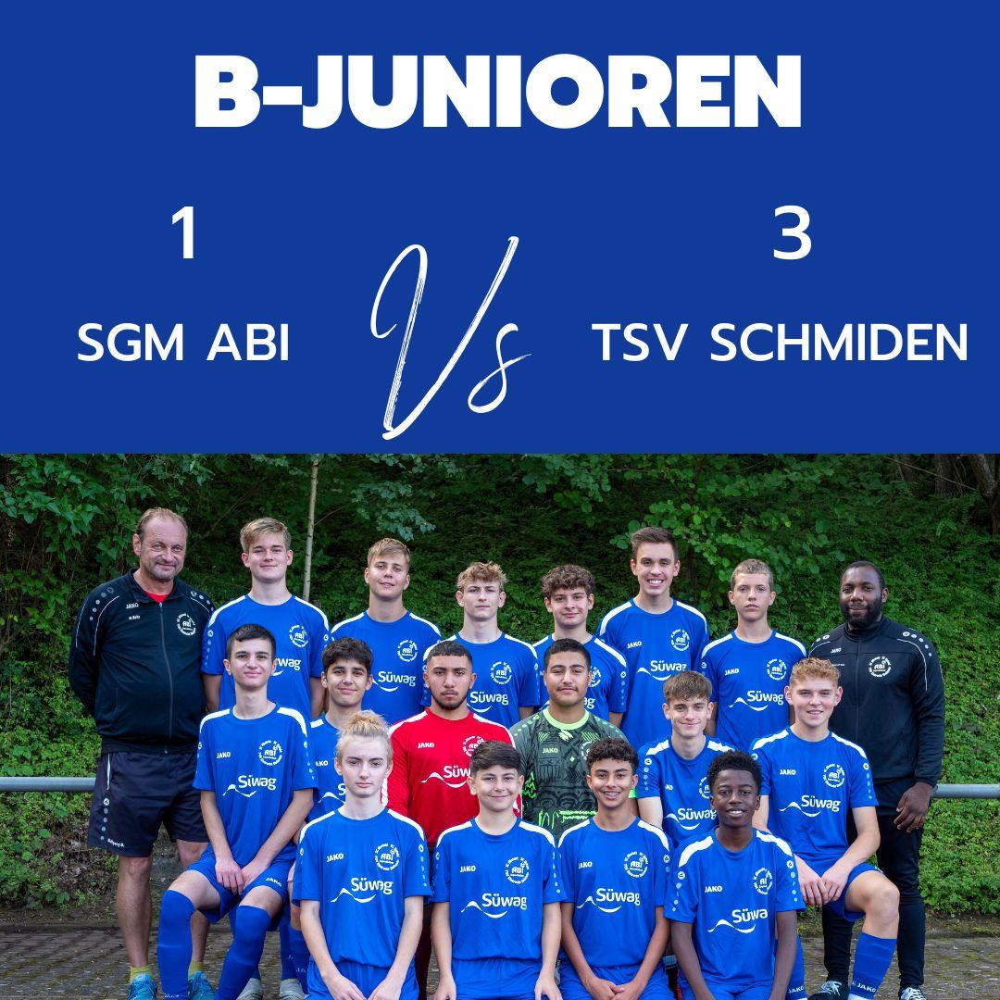

SGM-ABI B-Jugend gegen TSV Schmiden B1 1:3 (0:2)
Zwei Spielfreie Wochenenden wollten wir uns nicht gönnen, damit wir im Rhythmus bleiben haben wir uns einen sehr guten Testspielgegner gesucht und mit dem TSV Schmiden auch gefunden.
Es entwickelte sich von Anbeginn ein Intensives und gutes Fußballspiel. Die Ersten 30 Minuten gehörten der SGM-ABI die mit viel Druck und hohem Pressing etliche Abschlußsituationen erspielen konnte. Aber diese Phase war somit auch maßgeblich für den weiteren Spielverlauf, etliche Torchancen gingen knapp vorbei, wurden vom Torhüter pariert, Schmiden selbst kam hier lediglich zu Kontersituationen. Aber exakt hier lag der Vorteil bei den Gästen. So wurden wir knallhart bei zwei Ballverlusten im Mittelfeld in der 33 und 38 Min bestraft und es Stand 0:2 zur Halbzeit.
Es galt nun in Halbzeit 2 nun endlich eigene Treffer zu erzielen, aber in der 44 Min ein zu kurzer Rückpass auf unseren Torhüter erobert und versenkt vom Gegnerischen Stürmer. Somit 0:3. Jetzt galt es Charakter zu zeigen, und genau das zeigten die Jungs, natürlich spielten wir von nun an noch offensiver und dadurch konnte Schmiden den ein um anderen Konter fahren, den wir aber zumeist kämpferisch dann doch vor dem Abschluss verhindern konnten, bzw. Mikail im Tor parieren konnte. In der Phase hätten wir also weitere Tore kassieren können, aber mit Einsatz wurde es verhindert.
Die letzten 10 Minuten hatten wir noch drei 100% und konnten diese nicht unterbringen, aber das verdiente Ehrentor wurde dann doch durch Mika in der 76 Min noch erzielt.
Fazit, gegen einen starken Gegner gespielt, der spielerisch Top war, der nahezu jeden Fehler zu 100% verwerten konnte. D.h. jeder unnötige Ballverlust in der Vorwärtsbewegung verursacht unheimlich viel Druck auf unsere Defensive, aber gemeinsam habt ihr vieles abgelaufen.
Männer mit der Einstellung in den letzten beiden Spielen, und der immer weiteren Verbesserung der Passqualität im Spielaufbau sind wir auf dem richtigen Weg.
Im Kader: Robin, Talik, Maxim Noah, Mikail, Marvin, Jonas, Joris, Efe, Kay, Elton, Paul, Mika, Batuhan
Trainerteam: Georg, Kaan, Wolfgang
Bericht: Wolfgang Behr